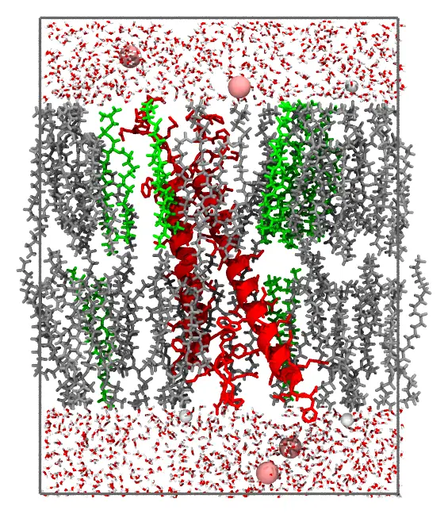

Membrane protein system
MembraneProtein inserts a membrane protein in a lipid bilayer of a given composition, and solvates it with water and ions, under orthorhombic periodic boundary conditions.
Packmol.MembraneProtein — Type
MembraneProtein(;
protein::String,
lipids::Union{String,Vector{String}},
lipid_molar_ratio = nothing, # equal amounts if not given
margin::Number = 15.0, # Å, between the protein and the faces of the cell, in x and y
solvent_margin::Number = 15.0, # Å, of water beyond the protein and the heads, in z
ionic_concentration::Number = 0.15, # mol/L
protein_charge = nothing, # computed from the residues of the protein by default
area_per_lipid = nothing, # Ų, automatic for the built-in lipids
lipid_head = nothing, lipid_tail = nothing, lipid_molar_mass = nothing,
flexibility::Real = 0.15,
water_pdbfile = nothing, # water by default
cation_pdbfile = nothing, anion_pdbfile = nothing, # Na⁺ and Cl⁻ by default
cation_charge = nothing, anion_charge = nothing,
density_table = nothing, density_table_units = "mol/kg", # NaCl(aq) by default
)Setup a membrane protein in a lipid bilayer, solvated by water and ions, with orthorhombic periodic boundary conditions. The protein (a PDB file) must be oriented for the membrane, as the structures of the OPM database are: with the membrane normal along z, and the middle of the bilayer at z = 0 (remove the DUM atoms of the OPM files, which mark the boundaries of the membrane). The protein is kept fixed, at the coordinates of the file.
The lipids are those of Membrane: the names of built-in lipids ("POPC", "POPE", "POPS", "POPG", "DPPC", "DOPC", "DMPC") or PDB files, mixed at lipid_molar_ratio, and placed in the same way. The cell extends margin beyond the protein in x and y, and the number of lipids in each leaflet fills its area, without the cross-section of the protein in the leaflet, at area_per_lipid.
The water and the ions fill two slabs, beyond the heads of the lipids of each leaflet; the cell extends solvent_margin beyond the heads and beyond the protein, in z. The water and the ions are placed in the volume of the slabs without the protein (estimated by Monte Carlo, as free_volume): ions at ionic_concentration (mol/L), and counterions to neutralize the charge of the protein, and water to the density of the salt solution, as in SolutionBoxUWI.
Packmol.write_packmol_input — Method
write_packmol_input(system::MembraneProtein; input = "membrane_protein.inp", output = "membrane_protein.pdb")Writes the input file of Packmol for a membrane protein system.
Packmol.packmol — Method
packmol(system::MembraneProtein; output = "membrane_protein.pdb", kwargs...)Builds and packs a membrane protein system, without writing an input file (as write_packmol_input followed by packmol). Any other keyword is forwarded to the packing engine; returns the PackmolSystem.
The protein
The protein must be oriented for the membrane, as the structures of the OPM database are: the membrane normal along z, and the middle of the bilayer at z = 0. Download the structure from OPM, and remove its DUM atoms, which mark the boundaries of the membrane (for example, with PDBTools: write_pdb("protein.pdb", read_pdb("1abc.pdb", "not resname DUM"))). The protein is kept fixed at the coordinates of the file. The example below is the transmembrane and cytoplasmic domains of the integrin αIIbβ3 (PDB 2K9J, as oriented by OPM), with two helices crossing the membrane.
An example
The integrin in a POPC/POPS 4:1 bilayer, with 0.15 M NaCl:
using Packmolsystem = MembraneProtein( protein = joinpath(Packmol.RecipesDirectory, "test", "data", "integrin_tm.pdb"), lipids = ["POPC", "POPS"], lipid_molar_ratio = [4, 1],)==================================================================
Membrane protein:
==================================================================
Protein: integrin_tm.pdb (charge 3)
Lipids: POPC, POPS
Lipid molar ratio (normalized): [0.8, 0.2]
Area per lipid: 63.8 Å^2
Margin around the protein: 15.0 Å
Solvent margin: 15.0 Å
Ionic concentration: 0.15 mol L^-1
Ions: sodium.pdb (+1), chloride.pdb (-1)
==================================================================write_packmol_input(system; input = "membrane_protein.inp", output = "membrane_protein.pdb")==================================================================
Summary:
==================================================================
Protein: integrin_tm.pdb, charge 3
Periodic box = a = 71.473 Å, b = 67.393 Å, c = 94.989 Å
α = 90.0°, β = 90.0°, γ = 90.0°
Center of the box = [0.941, -0.676, -0.65]
Lipids (area per lipid = 63.8 Ų):
upper leaflet: 68 lipids (54 POPC, 14 POPS), protein cross-section 468.4 Ų
lower leaflet: 66 lipids (53 POPC, 13 POPS), protein cross-section 608.4 Ų
Solvent (167074.0 ų without the protein):
water: 5548
sodium.pdb: 15
chloride.pdb: 18
density of the solution: 1.0032 g mL^-1
total charge: 0
==================================================================
Wrote file: membrane_protein.inp
==================================================================packmol(system; output = "membrane_protein.pdb")It packs in about 10 seconds with 14 threads. A slab through the protein (the protein in red):

How the system is built
- The cell extends
margin(15 Å) beyond the protein inxandy, andsolvent_margin(15 Å) beyond the heads of the lipids and beyond the protein inz. - The lipids are placed as in the Membrane system: the ends of their chains within 6 Å of the middle of the bilayer, and their heads beyond 6 Å + 0.85 L. The number of lipids of each leaflet fills the area of the cell without the cross-section of the protein in the leaflet, at the area per lipid (that of the actual membrane, for the built-in lipids).
- The water and the ions fill the slabs beyond the heads. Their volume without the protein is estimated by Monte Carlo (as
free_volume): the ions at the ionic concentration, with counterions to neutralize the charge of the protein (computed from its residues, or given asprotein_charge), and the water to the density of the salt solution, as in the Solute-Water-Ions system.
Equilibrating the system
The packed system has no overlaps, but it is not equilibrated. The built-in lipids are extended conformations, so the bilayer is thicker than a relaxed one, and than the hydrophobic belt of the protein, and the lipids are not yet in contact with the protein as in an equilibrated membrane. Minimize the energy of the system, and equilibrate it with molecular dynamics at constant pressure (NPT, with semi-isotropic pressure coupling, so that the area and the thickness of the membrane relax independently), with position restraints on the atoms of the protein (on its heavy atoms, or on its backbone), released gradually, until the area per lipid and the thickness of the membrane are stable. Only then start the production simulation.